Хроники Черной Длани
Наши сюжеты
Под сводами склепов, на забытых дорогах и в тени старых поместий. Истории тех, чьи голоса звучат в нашей коллекции.
Истории из архива
20 сюжетов · 1 анонса · 1 книга
Всего: 22
-
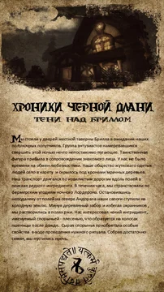
Иллюстрированный рассказТени над Бриллом
Ночной выезд из Брилла за реагентами для некромантского обряда.
-
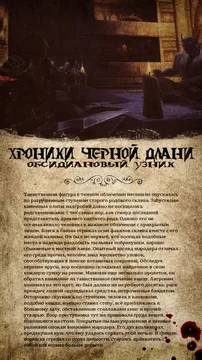
Иллюстрированный рассказОбсидиановый Узник
Вор Латронем оказывается пленником обитателей склепа.
-
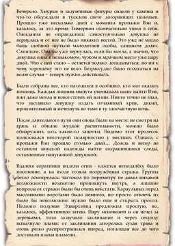
Иллюстрированный рассказВереница затерянных следов
Поиски пропавшей Вэи приводят отряд к обвалу и паучьей пещере.
-
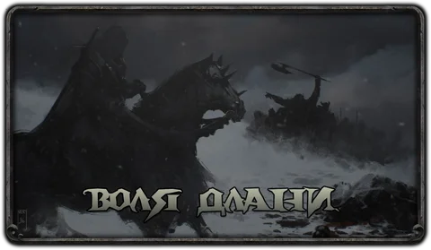
РассказВоля Длани
Самостоятельная история Тодеуса: его прибытие в поселение, убийства и интриги вокруг местной стражи, Оливера и Седрика.
-
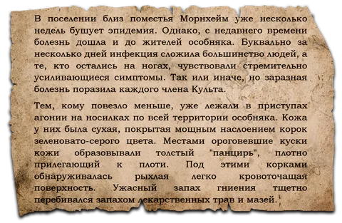
Сюжет в четырёх частяхЭпидемия
Эпидемия поражает обитателей поместья.
-
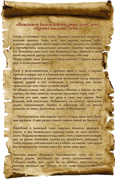
Иллюстрированный рассказРитуалы, что связывают нас
Агонит проводит испытание последователей через извлечение сердец и преобразование их связи с тьмой.
-
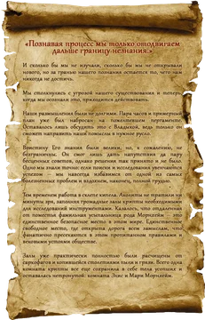
Короткий эпизодПриготовления к неизбежному
Культисты осознают угрозу собственному существованию, обсуждают замысел с Владыкой и оборудуют склеп для исследований.
-
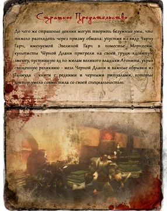
Иллюстрированный рассказСтрашное предательство
Доктор Чарна Гарч, скрывавшаяся под именем Эвелина, предаёт культ, крадёт жезл и страницы Талмуда.
-
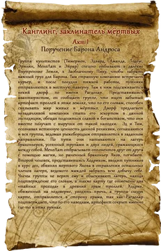
Иллюстрированный рассказКанглинг, заклинатель мёртвых
По поручению барона отряд попадает во Внутренние земли и присоединяется к дворфу Рагдолару в поисках Канглинга.
-
Сценарный набросок
Таинственный ритуал
В подземном зале Агонит накладывает печати на сердца участников обряда.
-
Рассказ
Вандермарский инцидент
Оживший эксперимент вырывается из склепа и убивает людей.
-
Сценарный набросок
В кругу семьи
Культисты добывают реагенты и оживляют жену и дочь барона Морнхейма.
-
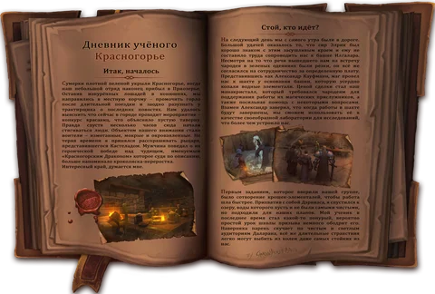
Иллюстрированный дневникАвиана Красногорье
Дневник учёного о Красногорье: прибытие в Приозерье, сотрудничество с Кауфманном и местными магами, устройство лаборатории и расследование странного мурлока.
-
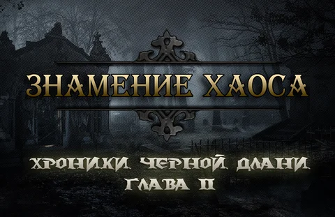
АнонсЗнамение Хаоса
Анонс новой главы хроник: Лордерон охвачен неизвестной болезнью, барон Морнхейм исчез из повседневной жизни, над поместьем и Вандермаром сгущается угроза.
-
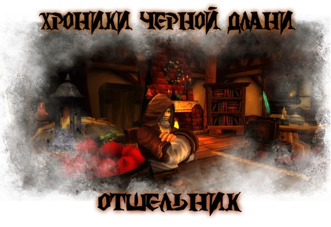
Рассказ и отдельные сценыОтшельник
Письмо приводит компанию из Брилла через Лордамер к затворнику Орфену.
-
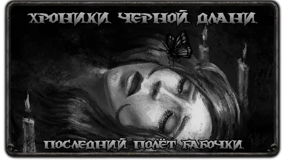
РассказПоследний полёт бабочки
Культисты готовят алхимическую уловку и заманивают Роксолану.
-
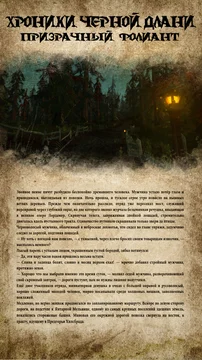
Иллюстрированный рассказПризрачный Фолиант
Замаскированные под фермеров культисты отправляются на юг, исследуют склепы и заброшенную лабораторию.
-
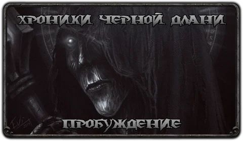
Диалоговый рассказПробуждение
Последователи снимают печать с покоев Владыки и получают новое поручение.
-
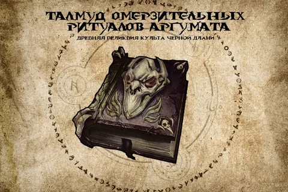
Книга ритуаловТалмуд Омерзительных Ритуалов Аргумата
Внутримировой справочник, а не приключение: три главы некромантских ритуалов разного порядка, включая защиту, восстановление, работу с духами, Чёрную Длань и Призрачную Хватку.
-
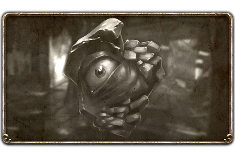
Сюжет в четырёх частяхТёмный рок забытых дней
Цикл о сделке с Нериусом Гофтеном и поисках реликвии.
-
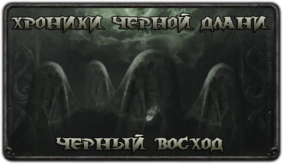
РассказЧерный восход
Продолжение событий с Роксоланой: Аманда возвращается, культ обсуждает последствия недавней вылазки и судьбу захваченного громилы.
-
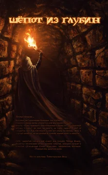
Иллюстрированный рассказШёпот из глубин
Последователи Черной Длани осваивают некротические руны и создают новый скипетр Агонита.
Ничего не найдено. Попробуйте другое название или сбросьте фильтры.